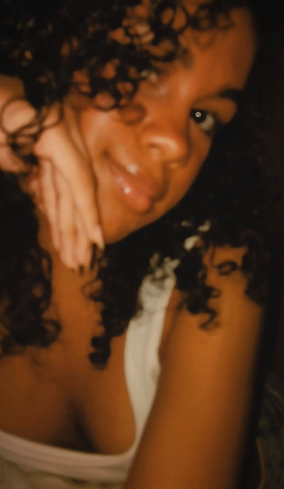

Feliz Aniversário!
Hoje é um dia muito especial. Bom, feliz aniversário para a menina mais doce e gentil que eu ja conheci. Eu queria poder descrever em palavras o quão incrível e importante você é pra mim, mas tenho toda a certeza de que não seria nem um terço do amor que eu sinto por você Maria Clara. Eu te amo mais que tudo nesse mundo, eu te amo cada dia mais, e o meu amor por você vai sempre se multiplicar, não só porque vc é minha melhor amiga, mas sim porque é a única que me entende quando tudo está desmoronando, quando tudo da errado e as demais coisas. Você não imagina o quanto eu transbordo de felicidade por ver você conquistando cada coisinha mínima. Eu sou, e sempre serei grata por tudo que você fez e faz por mim. E, vou estar sempre aqui para ser seu colo nos momentos difíceis, seu abraço em momentos felizes, e se um dia eu não estiver mais, porque ninguém nunca saberá o dia de amanhã, eu estarei no céu, te aplaudindo por cada conquista e vitórias. Independente de que rumo nossas vidas tomarem futuramente, saiba que lembrarei de você pelo resto da minha vida. Sei que esse ano nos afastamos bastante, mas nada muda o amor e tudo que sinto por você, e eu não me imaginaria em um universo se quer onde você não estivesse. Você é diferente Clara, diferente de todas as meninas que eu já conheci. Eu te amo mais do que qualquer texto consiga explicar. Saiba que você nunca estará sozinha, que vou sempre ser seu apoio e conforto quando precisar.🤍 Talvez eu nem precise dizer o quão incrivelmente incrível você é, porque isso é nítido para todos ao seu redor, tenho muita certeza de que, todas as pessoas, pensam da mesma forma que eu penso sobre você. Espero que, caso exista outras vidas, você possa ser minha melhor amiga em todas elas. Com você eu aprendi que amizade não é somente estar junto o tempo inteiro, mas sobre saber que, mesmo na distância e no silêncio, o amor, a confiança, conexão e carinho, continuam os mesmos. Eu te admiro demais por tudo que você ja vivenciou e continua sendo forte, admiro pela sua lealdade e pela forma de sempre cuidar tão bem dos outros, nada e ninguém consegue descrever o quão puro seu coração é. Garanto que a melhor parte da minha vida foi ter te conhecido, é como se depois de muito tempo eu tivesse encontrado uma parte de mim que nem eu mesma sabia que existia. E olha, eu espero muito poder ser madrinha dos seus filhos, a pessoa que mais vai chorar no seu casamento, a tia favorita dos seus filhos e poder envelhecer ao seu lado, o meu único desejo é ter você ao meu lado sempre. Eu espero que Deus cuide de você todos os dias, guiando cada passo seu e realizando todos os seus sonhos, te dando uma vida de paz, amor e de pessoas que valorizam como você é e a bondade do seu coração. Nunca duvide do quanto você é amada, e nunca deixe que alguém faça você acreditar que é menos do que realmente é. Que esse novo ciclo seja o melhor e o mais lindo da sua vida, e que eu tenha o privilégio de continuar fazendo parte dela por muitos e muitos anos. Eu te amo com todo o meu ser.🤍 E você sempre será o meu “porquê”. Parabéns meu amor. ❤️